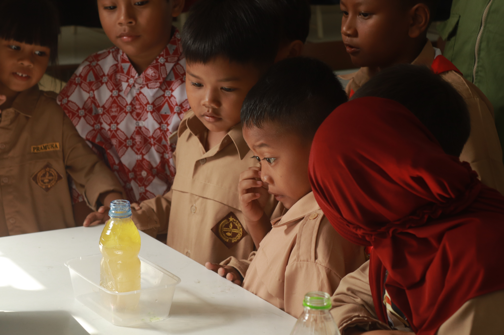
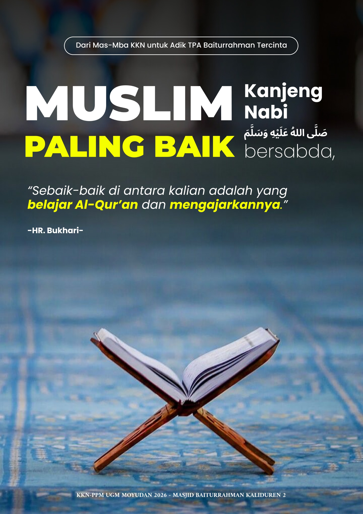
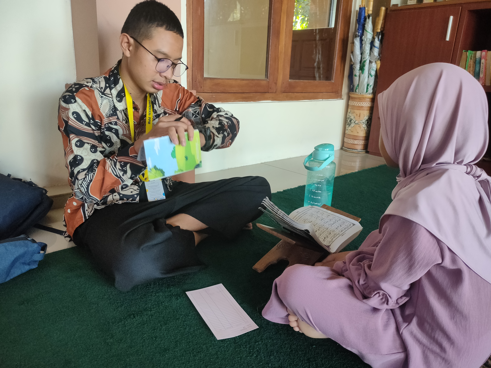
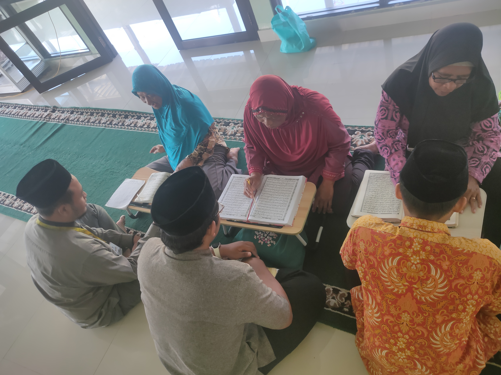
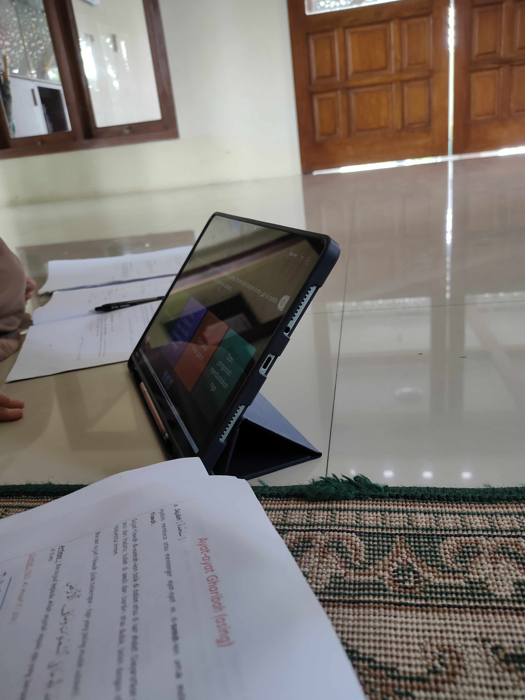

Chemical Engineering Student
Hi, I'm Rafa Kheiza Fathan
Final-year Chemical Engineering student at Gadjah Mada University. Bridging the gap between Process Engineering and Data Science to optimize engineering workflows.

Final-year Chemical Engineering student at Gadjah Mada University. Bridging the gap between Process Engineering and Data Science to optimize engineering workflows.
I am a Final-year Chemical Engineering student at Gadjah Mada University with core interests in particulate processing, minerals, ceramics technology, and the energy sector.
Adaptable and results-driven, I possess a unique capability to leverage data science to optimize process engineering workflows. I have a proven track record of developing both technical expertise and managerial leadership through professional certifications, projects, and active involvement in university organizations.
Bachelor of Chemical Engineering
Faculty of Engineering (FT UGM)
Science Major
Developing a modular, physics-based Operator Training Simulator in Python for the KBR Purifier™ front-end of an ammonia plant (2000 MTPD NH3). Supervised by Prof. Ir. Muslikhin Hidayat, ST, MT, PhD., IPU.
Community Service Program (KKN-PPM UGM 2026): applying engineering fundamentals and community leadership to real needs in Kaliduren 2, Moyudan, Sleman.
Location
Kaliduren 2, Moyudan, Sleman
Period
Jun 2026 - Aug 2026
Role
Sub-Unit Student Coordinator
Team
Multidisciplinary team of 8 students







Community Service Program (KKN-PPM UGM 2026)
Masjid Pogung Baru
Masjid Pogung Baru
General Chairman (President)
Oct 2025 - Present
Head of Strategic Studies Division
Aug 2025 - Oct 2025
Admin. Secretary & Staff Roles
Oct 2024 - Oct 2025
Head of Mentoring & Al-Qur'an Management
Dec 2024 - Dec 2025
Logistic Deputy Coord (Islamic Tech Fest)
Jul 2024 - Nov 2024
Junior Staff of Muslim Center Division
Oct 2023 - Dec 2024
Society of Petroleum Engineer UGM SC
Staff of Competency Dev (May '24 - Dec '25) & Event Coord (Oct '24 - Nov '24)
Chemical Eng. Department, UGM
Student Orientation Group Leader (Aug '23 - Nov '23)
Guest Speaker - MOTION 11
MAN 1 Tangerang Selatan (Jan 2024)